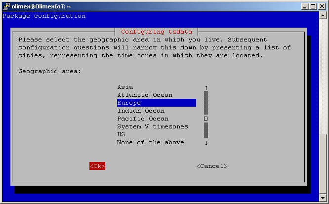
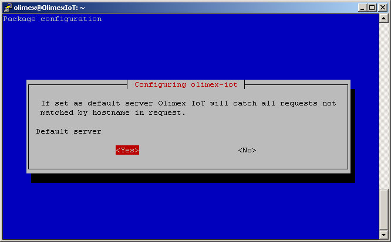

If you want to know how the image was made check How to build image for OlimexIoT server or go back to How to install OlimexIoT server
Put the card into the board and power it. Connect your computer to the board's mini USB port using USB mini cable.
If Windows does not recognize board connection as USB Ethernet / RNDIS Gadget you may need to install Windows RNDIS drivers.
Log in using your favorite SSH client. Board address is 192.168.2.1.
login as: olimex olimex@192.168.2.1's password: olimex
Switch to root
sudo su -
You will be prompted for olimex password. Use olimex
It is highly recommended to use hard disk because of intensive database operations which may reduce SD-card lifespan.
(recommended) Move rootfs to hard disk.
~/rootfs2hdd
If successful this command will reboot the board.
After reboot login again
login as: olimex olimex@192.168.2.1's password: olimex
Switch to root
sudo su -
You will be prompted for olimex password. Use olimex
(mandatory) Change olimex password
passwd olimex
(mandatory) Change root password
passwd root
Set date and time in format YYYY-MM-DD HH:MI
date -s "2016-10-20 14:20"
(mandatory) Regenerate default SSH keys
rm -f /etc/ssh/ssh_host_* dpkg-reconfigure openssh-server
(mandatory) Regenerate default SSL certificate
make-ssl-cert generate-default-snakeoil --force-overwrite
dpkg-reconfigure tzdata
Time zone shown on screen shots is for Bulgaria. You should choose yours.

dpkg-reconfigure postfix
Select Satellite system
This will allow to configure SMTP relay only (recommended)


Reload postfix to apply changes
service postfix reload
dpkg-reconfigure olimex-iot
If you are planning to use SSL (which is highly recommended) Server name have to match your SSL certificate.
To follow the log messages use
journalctl -f -o cat -u olimex-iot.service -u nginx.service
Continue with Configuration
Back to How to install OlimexIoT server